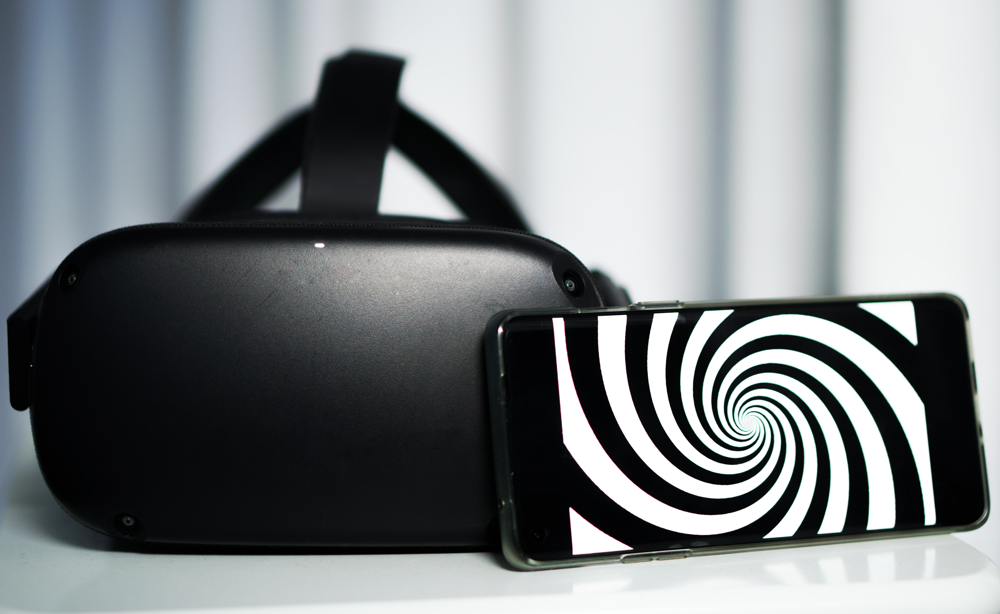

Hi, ik ben Doortje!
Ik ben een communicatie en multimedia design student aan de Haagse Hogeschool. Deze website is speciaal gemaakt voor het vak Human Computer Interaction, ook wel HCI. Het vak gaat over de communicate tussen mens en computer, bekende voorbeelden zijn Pokemon Go, smartwatches en VR brillen. Ook wordt HCI ingezet om een betere wereld te creeren, door bijvoorbeeld het inzetten van computersystemen in het ziekenhuis of op scholen.
Op deze website is de komende weken te volgen wat ik tijdens dit vak heb geleerd. Elke week leer ik een nieuw onderdeel binnen het vakgebied HCI. Deze onderdelen zijn Virtual reality, Augmented reality, Wearables, Artificial Creatures en Playful interfaces. Binnen deze onderdelen is verwacht dat een aantal opdrachten worden gemaakt. Ook naar aanleiding van de hoorcolleges worden opdrachten uitgewerkt. Deze zijn terug te vinden deze website.
De laatste twee weken van het vak worden besteed aan het maken van een groot project. Dit heten de HCI weken, waarin je twee weken van 9 tot 5 besteed aan expimenteren binnen het vakgebied.
Mijn verwachting van dit vak is dat ik het erg leuk ga vinden. Ik ben geintresseerd in de ontwikkelingen binnen HCI en ben benieuwd hoe de technieken precies werken. Ik hoop dat ik het begrijp en dat ik uiteindelijk iets moois kan maken.
Tijdens dit vak wil ik graag leren hoe de basis van bepaalde programma's werken. Ik denk dat ik hier het meeste aan heb, vooral omdat bepaalde programma's aansluiting hebben op elkaar. Ook lijkt het mij interessant om meer te leren over het coderen, zoals bij A-frame en arduino. Tijdens studiereis heb ik de ICT'ers al zien werken met arduino en gezien wat je er mee kan maken, dus ik ben heel benieuwd wat ik straks zelf kan maken.
Veel leesplezier!